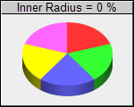
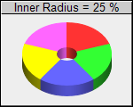
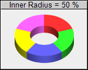
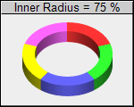
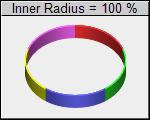

This example demonstrates the effects of different donut widths.
Donut widths are configured by using different inner and outer radii when calling PieChart.setDonutSize.
ChartDirector 7.1 (C++ Edition)
Donut Width





Source Code Listing
#include "chartdir.h"
#include <stdio.h>
void createChart(int chartIndex, const char *filename)
{
char buffer[1024];
// Determine the donut inner radius (as percentage of outer radius) based on input parameter
int donutRadius = chartIndex * 25;
// The data for the pie chart
double data[] = {10, 10, 10, 10, 10};
const int data_size = (int)(sizeof(data)/sizeof(*data));
// The labels for the pie chart
const char* labels[] = {"Marble", "Wood", "Granite", "Plastic", "Metal"};
const int labels_size = (int)(sizeof(labels)/sizeof(*labels));
// Create a PieChart object of size 150 x 120 pixels, with a grey (EEEEEE) background, black
// border and 1 pixel 3D border effect
PieChart* c = new PieChart(150, 120, 0xeeeeee, 0x000000, 1);
// Set donut center at (75, 65) and the outer radius to 50 pixels. Inner radius is computed
// according donutWidth
c->setDonutSize(75, 60, 50, 50 * donutRadius / 100);
// Add a title to show the donut width
sprintf(buffer, "Inner Radius = %d %%", donutRadius);
c->addTitle(buffer, "Arial", 10)->setBackground(0xcccccc, 0);
// Draw the pie in 3D
c->set3D(12);
// Set the pie data and the pie labels
c->setData(DoubleArray(data, data_size), StringArray(labels, labels_size));
// Disable the sector labels by setting the color to Transparent
c->setLabelStyle("", 8, Chart::Transparent);
// Output the chart
c->makeChart(filename);
//free up resources
delete c;
}
int main(int argc, char *argv[])
{
createChart(0, "donutwidth0.png");
createChart(1, "donutwidth1.png");
createChart(2, "donutwidth2.png");
createChart(3, "donutwidth3.png");
createChart(4, "donutwidth4.png");
return 0;
}